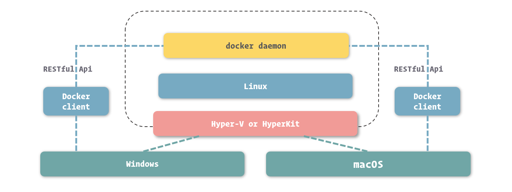

我的 Docker 使用经验都是通过在项目中的运用学到的，实际上已经可以满足日常所需了，但是自认为缺乏一些细节方面的知识，所以这几天通过阅读一本掘金小册《开发者必备的 Docker 实践指南》，进行了一次系统性学习，以下是我记录的一些我认为的重点和我之前不太了解或不熟悉的内容。
本文不适合作为 Docker 初学者学习的指南，适合于查漏补缺时的参考。
容器技术
所谓容器技术，指的是操作系统自身支持一些接口，能够让应用程序间可以互不干扰的独立运行，并且能够对其在运行中所使用的资源进行干预。
由于没有指令转换，运行在容器中的应用程序自身必须支持在真实操作系统上运行，也就是必须遵循硬件平台的指令规则。
- 容器技术提供了相对独立的应用程序运行的环境，也提供了资源控制的功能，所以我们依然可以归纳其为一种实现不完全的虚拟化技术。
虚拟机 VS 容器
- 由于没有了虚拟操作系统和虚拟机监视器这两个层次，大幅减少了应用程序运行带来的额外消耗。
- 运行在容器虚拟化中的应用程序，在运行效率上与真实运行在物理平台上的应用程序不相上下。
| 属性 | 虚拟机 | Docker |
|---|---|---|
| 启动速度 | 分钟级 | 秒级 |
| 硬盘使用 | GB 级 | MB 级 |
| 性能 | 较低 | 接近原生 |
| 普通机器支撑量 | 几个 | 数百个 |
Docker 技术实现
Docker 的实现，主要归结于三大技术：
- 命名空间 ( Namespaces )
- Linux 核心在 2.4 版本后逐渐引入的一项用于运行隔离的模块。
- 控制组 ( Control Groups )
- Linux 内核在 2.6 版本后逐渐引入的一项对计算机资源控制的模块。
- CGroups 主要做的是硬件资源的隔离。
- 联合文件系统 ( Union File System )
- 联合文件系统 ( Union File System ) 是一种能够同时挂载不同实际文件或文件夹到同一目录，形成一种联合文件结构的文件系统。
- 在 Docker 中，提供了一种对 UnionFS 的改进实现，也就是 AUFS ( Advanced Union File System )
Docker 的理念
与其他虚拟化实现甚至其他容器引擎不同的是，Docker 推崇一种轻量级容器的结构
- 即一个应用一个容器。
我们能用 Docker 做些什么
- 更快、更一致的交付你的应用程序
- 跨平台部署和动态伸缩
- 让同样的硬件提供更多的产出能力
Docker 核心
四大组成对象
- 镜像 ( Image )
- 可以理解为一个只读的文件包，其中包含了虚拟环境运行最原始文件系统的内容。
- 容器 ( Container )
- 如果把镜像理解为编程中的类，那么容器就可以理解为类的实例。
- 网络 ( Network )
- 数据卷 ( Volume )
- 在 Docker 中，通过这几种方式进行数据共享或持久化的文件或目录，我们都称为数据卷 ( Volume )。
Docker Engine
在 Docker Engine 中，实现了 Docker 技术中最核心的部分，也就是容器引擎这一部分。
docker daemon 和 docker CLI
Docker Engine 是由多个独立软件所组成的软件包。最核心的是 docker daemon 和 docker CLI。
在 docker daemon 管理容器等相关资源的同时，它也向外暴露了一套 RESTful API
docker daemon 和 docker CLI 所组成的，正是一个标准 C/S ( Client-Server ) 结构的应用程序。衔接这两者的，正是 docker daemon 所提供的这套 RESTful API。
搭建 Docker 运行环境
Docker Engine 的稳定版固定为每三个月更新一次，而预览版则每月都会更新。
不论是稳定版还是预览版，它们都会以发布时的年月来命名版本号，例如如 17 年 3 月的版本，版本号就是 17.03。
- 在主要版本之外，Docker 官方也以解决 Bug 为主要目的，不定期发布次要版本。次要版本的版本号由主要版本和发布序号组成
- 如：17.03.2 就是对 17.03 版本的第二次修正。
Docker 的环境依赖
以目前 Docker 官方主要维护的版本为例，我们需要使用基于 Linux kernel 3.10 以上版本的 Linux 系统来安装 Docker。
在Mac 和 Windows 中使用 Docker
Docker Desktop
Docker 官方为 Windows 和 macOS 系统单独开辟了一条产品线，名为 Docker Desktop，其定位是快速为开发者提供在 Windows 和 macOS 中运行 Docker 环境的工具。
Docker Desktop 的实现原理
既然 Windows 和 macOS 中没有 Docker 能够利用的 Linux 环境，那么我们需要提供一个 Linux 环境
- 在 Windows 中，通过 Hyper-V 实现虚拟化
- 对于 Windows 系统来说，安装 Docker for Windows 需要符合以下条件：
- 必须使用 Windows 10 Pro ( 专业版 )
- 必须使用 64 bit 版本的 Windows
- 对于 Windows 系统来说，安装 Docker for Windows 需要符合以下条件：
- 在 macOS 中，通过 HyperKit 实现虚拟化

镜像与容器
容器的生命周期
Docker 容器的生命周期里分为五种状态：
- Created：容器已经被创建，容器所需的相关资源已经准备就绪，但容器中的程序还未处于运行状态。
- Running：容器正在运行，也就是容器中的应用正在运行。
- Paused：容器已暂停，表示容器中的所有程序都处于暂停 ( 不是停止 ) 状态。
- Stopped：容器处于停止状态，占用的资源和沙盒环境都依然存在，只是容器中的应用程序均已停止。
- Deleted：容器已删除，相关占用的资源及存储在 Docker 中的管理信息也都已释放和移除。
主进程
在 Docker 的设计中，容器的生命周期其实与容器中 PID 为 1 这个进程有着密切的关系。
- 当我们启动容器时，Docker 其实会按照镜像中的定义，启动对应的程序，并将这个程序的主进程作为容器的主进程 ( 也就是 PID 为 1 的进程 )。
- 而当我们控制容器停止时，Docker 会向主进程发送结束信号，通知程序退出。
- 而当容器中的主进程主动关闭时 ( 正常结束或出错停止 )，也会让容器随之停止。
写时复制 ( Copy on Write ) 机制
Docker 的写时复制与编程中的相类似，也就是在通过镜像运行容器时，并不是马上就把镜像里的所有内容拷贝到容器所运行的沙盒文件系统中，而是利用 UnionFS 将镜像以只读的方式挂载到沙盒文件系统中。只有在容器中发生对文件的修改时，修改才会体现到沙盒环境上。
- 也就是说，容器在创建和启动的过程中，不需要进行任何的文件系统复制操作，也不需要为容器单独开辟大量的硬盘空间
- 采用写时复制机制来设计的 Docker，既保证了镜像在生成为容器时，以及容器在运行过程中，不会对自身造成修改。又借助剔除常见虚拟化在初始化时需要从镜像中拷贝整个文件系统的过程，大幅提高了容器的创建和启动速度。
- 可以说，Docker 容器能够实现秒级启动速度，写时复制机制在其中发挥了举足轻重的作用。
运行和管理容器
管理容器
通过 docker ps 命令，可以罗列出 Docker 中的容器。
- 默认情况下，
docker ps列出的容器是处于运行中的容器，如果要列出所有状态的容器，需要增加-a或--all选项。 - CONTAINER ID、IMAGE、CREATED、NAMES 分别表示容器 ID，容器所基于的镜像，容器的创建时间和容器的名称。
- COMMAND 表示的是容器中主程序 ( 也就是与容器生命周期所绑定进程所关联的程序 ) 的启动命令，这条命令是在镜像内定义的，而容器的启动其实质就是启动这条命令。
- STATUS 表示容器所处的状态，常见的状态表示有三种：
- Created 此时容器已创建，但还没有被启动过。
- Up [ Time ] 这时候容器处于正在运行状态，而这里的 Time 表示容器从开始运行到查看时的时间。
- Exited ([ Code ]) [ Time ] 容器已经结束运行，这里的 Code 表示容器结束运行时，主程序返回的程序退出码，而 Time 则表示容器结束到查看时的时间。
进入容器
在开发过程中，我们更常使用它来作为我们进入容器的桥梁。
- 这里说的进入容器，就是通过
docker exec命令来启动 sh 或 bash，并通过它们实现对容器内的虚拟环境的控制。 - 由于 bash 的功能要比 sh 丰富，所以在能够使用 bash 的容器里，我们优先选择它作为控制台程序。
docker exec -it nginx bash-i( –interactive ) 表示保持我们的输入流- 只有使用它才能保证控制台程序能够正确识别我们的命令
-t( –tty ) 表示启用一个伪终端，形成我们与 bash 的交互- 如果没有它，我们无法看到 bash 内部的执行结果
衔接到容器
Docker 为我们提供了一个 docker attach 命令，用于将当前的输入输出流连接到指定的容器上。
docker attach nginx- 可以理解为我们将容器中的主程序转为了“前台”运行 ( 与
docker run中的-d选项有相反的意思 ) - 在实际开发中，由于
docker attach限制较多，功能也不够强大，所以并没有太多用武之地。
为容器配置网络
在 Docker 网络中，有三个比较核心的概念：沙盒 ( Sandbox )、网络 ( Network )、端点 ( Endpoint )。
- 沙盒提供了容器的虚拟网络栈
- 也就是之前所提到的端口套接字、IP 路由表、防火墙等的内容。
- 隔离了容器网络与宿主机网络，形成了完全独立的容器网络环境。
- 网络可以理解为 Docker 内部的虚拟子网
- 网络内的参与者相互可见并能够进行通讯。
- Docker 的这种虚拟网络也是与宿主机网络存在隔离关系的，其目的主要是形成容器间的安全通讯环境。
- 端点是位于容器或网络隔离墙之上的洞
- 其主要目的是形成一个可以控制的突破封闭的网络环境的出入口。
- 当容器的端点与网络的端点形成配对后，就如同在这两者之间搭建了桥梁，便能够进行数据传输了。
这三者形成了 Docker 网络的核心模型，也就是容器网络模型 ( Container Network Model )。
网络驱动的种类
目前 Docker 官方为我们提供了五种 Docker 网络驱动，分别是：Bridge Driver、Host Driver、Overlay Driver、MacLan Driver、None Driver。
- Bridge 网络是 Docker 容器的默认网络驱动
- 简而言之其就是通过网桥来实现网络通讯
- Overlay 网络是借助 Docker 集群模块 Docker Swarm 来搭建的跨 Docker Daemon 网络
- 我们可以通过它搭建跨物理主机的虚拟网络，进而让不同物理机中运行的容器感知不到多个物理机的存在。
暴露端口
Docker 为容器网络增加了一套安全机制，只有容器自身允许的端口，才能被其他容器所访问。
- 这个容器自我标记端口可被访问的过程，我们通常称为暴露端口。
端口的暴露可以通过 Docker 镜像进行定义，也可以在容器创建时进行定义。
- 在容器创建时进行定义的方法是借助 –expose 这个选项。
docker run -d --name mysql -e MYSQL_RANDOM_ROOT_PASSWORD=yes --expose 13306 --expose 23306 mysql:5.7
这里我们为 MySQL 暴露了 13306 和 23306 这两个端口，暴露后我们可以在 docker ps 中看到这两个端口已经成功的打开。
1 | … PORTS NAMES |
创建网络
在 Docker 里，我们也能够创建网络，形成自己定义虚拟子网的目的。
docker network create -d bridge individual
- 通过 -d 选项我们可以为新的网络指定驱动的类型
- 其值可以是刚才我们所提及的 bridge、host、overlay、maclan、none，也可以是其他网络驱动插件所定义的类型
- 这里我们使用的是 Bridge Driver ( 当我们不指定网络驱动时，Docker 也会默认采用 Bridge Driver 作为网络驱动 )。
通过 docker network ls 或是 docker network list 可以查看 Docker 中已经存在的网络。
我们创建容器时，可以通过 --network 来指定容器所加入的网络
- 一旦这个参数被指定，容器便不会默认加入到 bridge 这个网络中了 ( 但是仍然可以通过
--network bridge让其加入 )。 docker run -d --name mysql -e MYSQL_RANDOM_ROOT_PASSWORD=yes --network individual mysql:5.7- 两个容器处于不同的网络，之间是不能相互连接引用的。以下启动命令会报错：
docker run -d --name webapp --link mysql --network bridge webapp:latest
端口映射
在实际使用中，还有一个非常常见的需求，就是我们需要在容器外通过网络访问容器中的应用。
通过 Docker 端口映射功能，我们可以把容器的端口映射到宿主操作系统的端口上，当我们从外部访问宿主操作系统的端口时，数据请求就会自动发送给与之关联的容器端口。
- 要映射端口，我们可以在创建容器时使用 -p 或者是 –publish 选项。
docker run -d --name nginx -p 80:80 -p 443:443 nginx:1.12
使用端口映射选项的格式是 -p <ip>:<host-port>:<container-port>，其中 ip 是宿主操作系统的监听 ip，可以用来控制监听的网卡，默认为 0.0.0.0，也就是监听所有网卡。
管理和存储数据
挂载方式
基于底层存储实现，Docker 提供了三种适用于不同场景的文件系统挂载方式：Bind Mount、Volume 和 Tmpfs Mount。
- Bind Mount 能够直接将宿主操作系统中的目录和文件挂载到容器内的文件系统中，通过指定容器外的路径和容器内的路径，就可以形成挂载映射关系，在容器内外对文件的读写，都是相互可见的。
- Volume 也是从宿主操作系统中挂载目录到容器内，只不过这个挂载的目录由 Docker 进行管理，我们只需要指定容器内的目录，不需要关心具体挂载到了宿主操作系统中的哪里。
- Tmpfs Mount 支持挂载系统内存中的一部分到容器的文件系统里，不过由于内存和容器的特征，它的存储并不是持久的，其中的内容会随着容器的停止而消失。
挂载文件到容器
使用 -v 或 --volume 来挂载宿主操作系统目录的形式是 -v <host-path>:<container-path> 或 --volume <host-path>:<container-path>，其中 host-path 和 container-path 分别代表宿主操作系统中的目录和容器中的目录。
- 需要注意的是，为了避免混淆，Docker 这里强制定义目录时必须使用绝对路径，不能使用相对路径。
- 能够指定目录进行挂载，也能够指定具体的文件来挂载
Docker 还支持以只读的方式挂载，通过只读方式挂载的目录和文件，只能被容器中的程序读取，但不接受容器中程序修改它们的请求。在挂载选项 -v 后再接上 :ro 就可以只读挂载了。
docker run -d --name nginx -v /webapp/html:/usr/share/nginx/html:ro nginx:1.12
Bind Mount 常见场景：
- 当我们需要从宿主操作系统共享配置的时候。
- 对于一些配置项，我们可以直接从容器外部挂载到容器中，这利于保证容器中的配置为我们所确认的值，也方便我们对配置进行监控。
- 例如，遇到容器中时区不正确的时候，我们可以直接将操作系统的时区配置，也就是
/etc/timezone这个文件挂载并覆盖容器中的时区配置。
- 例如，遇到容器中时区不正确的时候，我们可以直接将操作系统的时区配置，也就是
- 对于一些配置项，我们可以直接从容器外部挂载到容器中，这利于保证容器中的配置为我们所确认的值，也方便我们对配置进行监控。
- 当我们需要借助 Docker 进行开发的时候。
- 虽然在 Docker 中，推崇直接将代码和配置打包进镜像，以便快速部署和快速重建。但这在开发过程中显然非常不方便，因为每次构建镜像需要耗费一定的时间，这些时间积少成多，就是对开发工作效率的严重浪费了。如果我们直接把代码挂载进入容器，那么我们每次对代码的修改都可以直接在容器外部进行。
挂载临时文件目录
Tmpfs Mount 是一种特殊的挂载方式，它主要利用内存来存储数据。由于内存不是持久性存储设备，所以其带给 Tmpfs Mount 的特征就是临时性挂载。
挂载临时文件目录要通过 --tmpfs 这个选项来完成。
- 由于内存的具体位置不需要我们来指定，这个选项里我们只需要传递挂载到容器内的目录即可。
docker run -d --name webapp --tmpfs /webapp/cache webapp:latest
Tmpfs Mount 常见场景：
- 应用中使用到，但不需要进行持久保存的敏感数据，可以借助内存的非持久性和程序隔离性进行一定的安全保障。
- 读写速度要求较高，数据变化量大，但不需要持久保存的数据，可以借助内存的高读写速度减少操作的时间。
使用数据卷
数据卷的本质其实依然是宿主操作系统上的一个目录，只不过这个目录存放在 Docker 内部，接受 Docker 的管理。
- 在使用数据卷进行挂载时，我们不需要知道数据具体存储在了宿主操作系统的何处，只需要给定容器中的哪个目录会被挂载即可。
docker run -d --name webapp -v /webapp/storage webapp:latest
为了方便识别数据卷，我们可以像命名容器一样为数据卷命名。在我们未给出数据卷命名的时候，Docker 会采用数据卷的 ID 命名数据卷。我们也可以通过 -v <name>:<container-path> 这种形式来命名数据卷。
$ docker run -d --name webapp -v appdata:/webapp/storage webapp:latest- 前面提到了，-v 在定义绑定挂载时必须使用绝对路径，其目的主要是为了避免与数据卷挂载中命名这种形式的冲突。
数据卷常见场景：
- 当希望将数据在多个容器间共享时，利用数据卷可以在保证数据持久性和完整性的前提下，完成更多自动化操作。
- 当我们希望对容器中挂载的内容进行管理时，可以直接利用数据卷自身的管理方法实现。
- 当使用远程服务器或云服务作为存储介质的时候，数据卷能够隐藏更多的细节，让整个过程变得更加简单。
共用数据卷
数据卷的另一大作用是实现容器间的目录共享，也就是通过挂载相同的数据卷，让容器之间能够同时看到并操作数据卷中的内容。
docker run -d --name webapp -v html:/webapp/html webapp:latestdocker run -d --name nginx -v html:/usr/share/nginx/html:ro nginx:1.12- 使用
-v选项挂载数据卷时，如果数据卷不存在，Docker 会为我们自动创建和分配宿主操作系统的目录，而如果同名数据卷已经存在，则会直接引用。
删除数据卷
通过 docker volume rm 来删除指定的数据卷
docker volume rm appdata- 在删除数据卷之前，我们必须保证数据卷没有被任何容器所使用 ( 也就是之前引用过这个数据卷的容器都已经删除 )，否则 Docker 不会允许我们删除这个数据卷。
在 docker rm 删除容器的命令中，我们可以通过增加 -v 选项来删除容器关联的数据卷。
docker rm -v webapp
Docker 向我们提供了 docker volume prune 命令，可以删除那些没有被容器引用的数据卷。
数据卷容器
数据卷容器，就是一个没有具体指定的应用，甚至不需要运行的容器，我们使用它的目的，是为了定义一个或多个数据卷并持有它们的引用。
由于不需要容器本身运行，因而找个简单的系统镜像都可以完成创建。
docker create --name appdata -v /webapp/storage ubuntu- 在使用数据卷容器时，我们不建议再定义数据卷的名称，因为我们可以通过对数据卷容器的引用来完成数据卷的引用。
Docker 的 Network 是容器间的网络桥梁，如果做类比，数据卷容器就可以算是容器间的文件系统桥梁。
- 我们可以像加入网络一样引用数据卷容器，只需要在创建新容器时使用专门的
--volumes-from选项即可。 docker run -d --name webapp --volumes-from appdata webapp:latest- 引用数据卷容器时，不需要再定义数据卷挂载到容器中的位置，Docker 会以数据卷容器中的挂载定义将数据卷挂载到引用的容器中。
备份和迁移数据卷
利用数据卷容器，我们能够更方便的对数据卷中的数据进行迁移。
数据备份、迁移、恢复的过程可以理解为对数据进行打包，移动到其他位置，在需要的地方解压的过程。
- 要备份数据，我们先建立一个临时的容器，将用于备份的目录和要备份的数据卷都挂载到这个容器上。
docker run --rm --volumes-from appdata -v /backup:/backup ubuntu tar cvf /backup/backup.tar /webapp/storage- 通过
--rm选项，我们可以让容器在停止后自动删除，而不需要我们再使用容器删除命令来删除它，这对于我们使用一些临时容器很有帮助。 - 我们在镜像定义之后接上命令，可以直接替换掉镜像所定义的主程序启动命令，而去执行这一条命令。
- 在备份后，我们就可以在
/backup下找到数据卷的备份文件，也就是backup.tar了。
- 通过
- 如果要恢复数据卷中的数据，我们也可以借助临时容器完成。
docker run --rm --volumes-from appdata -v /backup:/backup ubuntu tar xvf /backup/backup.tar -C /webapp/storage --strip
另一个挂载选项
Docker 里为我们提供了一个相对支持丰富的挂载方式，也就是通过 --mount 这个选项配置挂载。
sudo docker run -d --name webapp webapp:latest --mount 'type=volume,src=appdata,dst=/webapp/storage,volume-driver=local,volume-opt=type=nfs,volume-opt=device=<nfs-server>:<nfs-path>' webapp:latest- 在
--mount中，我们可以通过逗号分隔这种 CSV 格式来定义多个参数。- 通过
type我们可以定义挂载类型，其值可以是：bind，volume 或 tmpfs。
- 通过
--mount选项能够帮助我们实现集群挂载的定义，例如在这个例子中，我们挂载的来源是一个 NFS 目录。
- 在
挂载主要有三种目的：
- 将程序的配置通过挂载的方式覆盖容器中对应的文件
- 这让我们可以直接在容器外修改程序的配置，并通过直接重启容器就能应用这些配置；
- 把目录挂载到容器中应用数据的输出目录
- 让容器中的程序直接将数据输出到容器外，对于 MySQL、Redis 中的数据，程序的日志等内容，我们可以使用这种方法来持久保存它们；
- 把代码或者编译后的程序挂载到容器中
- 让它们在容器中可以直接运行，这就避免了我们在开发中反复构建镜像带来的麻烦，节省出大量宝贵的开发时间。
保存和共享镜像
提交容器更改
Docker 镜像的本质是多个基于 UnionFS 的镜像层依次挂载的结果，而容器的文件系统则是在以只读方式挂载镜像后增加的一个可读可写的沙盒环境。Docker 中为我们提供了将容器中的这个可读可写的沙盒环境持久化为一个镜像层的方法。
- 我们能够在 Docker 里将容器内的修改记录下来，保存为一个新的镜像。
将容器修改的内容保存为镜像的命令是 docker commit
- 由于镜像的结构很像代码仓库里的修改记录，而记录容器修改的过程又像是在提交代码，所以这里我们更形象的称之为提交容器的更改。
docker commit webapp- 像通过 Git 等代码仓库软件提交代码一样，我们还能在提交容器更改的时候给出一个提交信息，方便以后查询。
docker commit -m "Configured" webapp
- Docker 执行将容器内沙盒文件系统记录成镜像层的时候，会先暂停容器的运行，以保证容器内的文件系统处于一个相对稳定的状态，确保数据的一致性。
为镜像命名
docker tag 0bc42f7ff218 webapp:1.0
使用 docker tag 能够为未命名的镜像指定镜像名，也能够对已有的镜像创建一个新的命名。
- 当我们对未命名的镜像进行命名后，Docker 就不会在镜像列表里继续显示这个镜像，取而代之的是我们新的命名。
- 而如果我们对以后镜像使用
docker tag，旧的镜像依然会存在于镜像列表中。docker tag webapp:1.0 webapp:latest- 实质是它们其实引用着相同的镜像层，这个我们能够从镜像 ID 中看得出来 ( 因为镜像 ID 就是最上层镜像层的 ID )。
还可以直接在 docker commit 命令里指定新的镜像名，这种方式在使用容器提交时会更加方便。
docker commit -m "Upgrade" webapp webapp：2.0
导出镜像
docker save 命令可以将镜像输出，提供了一种让我们保存镜像到 Docker 外部的方式。
- 在默认定义下，
docker save命令会将镜像内容放入输出流中，这就需要我们使用管道进行接收docker save webapp:1.0 > webapp-1.0.tar
- docker save 命令还为我们提供了
-o选项，用来指定输出文件，使用这个选项可以让命令更具有统一性。docker save -o ./webapp-1.0.tar webapp:1.0
导入镜像
导入镜像的方式也很简单，使用与 docker save 相对的 docker load 命令即可。
- docker load 命令是从输入流中读取镜像的数据，所以我们这里也要使用管道来传输内容。当然
docker load < webapp-1.0.tar
- 也能够使用
-i选项指定输入文件。docker load -i webapp-1.0.tar
- 镜像导入后，我们就可以通过
docker images看到它了，导入的镜像会延用原有的镜像名称
批量迁移
通过 docker save 和 docker load 命令我们还能够批量迁移镜像，只要我们在 docker save 中传入多个镜像名作为参数，它就能够将这些镜像都打成一个包，便于我们一次性迁移多个镜像。
docker save -o ./images.tar webapp:1.0 nginx:1.12 mysql:5.7
导出和导入容器
使用 docker export 命令我们可以直接导出容器
- 可以把它简单的理解为
docker commit与docker save的结合体。 docker export -o ./webapp.tar webapp
使用 docker export 导出的容器包，使用 docker import 导入。
- 需要注意的是，使用
docker import并非直接将容器导入，而是将容器运行时的内容以镜像的形式导入。 - 在
docker import的参数里，我们可以给这个镜像命名。docker import ./webapp.tar webapp:1.0
docker export 的应用场景主要用来制作基础镜像，比如你从一个ubuntu镜像启动一个容器，然后安装一些软件和进行一些设置后，使用docker export保存为一个基础镜像。然后，把这个镜像分发给其他人使用，比如作为基础的开发环境。
docker save 和 docker export 的区别：
- docker save 保存的是镜像（Image），docker export 保存的是容器（Container）；
- docker load 用来载入镜像包，docker import 用来载入容器包，但两者都会恢复为镜像；
- docker load 不能对载入的镜像重命名，而 docker import 可以为镜像指定新名称。
通过 Dockerfile 创建镜像
常见 Dockerfile 指令
FROM
通常来说，我们不会从零开始搭建一个镜像，而是会选择一个已经存在的镜像作为我们新镜像的基础，这种方式能够大幅减少我们的时间。
通过 FROM 指令指定一个基础镜像，接下来所有的指令都是基于这个镜像所展开的。
FROM 指令支持三种形式：
FROM <image> [AS <name>]FROM <image>[:<tag>] [AS <name>]FROM <image>[@<digest>] [AS <name>]
Dockerfile 中的第一条指令必须是 FROM 指令，因为没有了基础镜像，一切构建过程都无法开展。
- 当 FROM 第二次或者之后出现时，表示在此刻构建时，要将当前指出镜像的内容合并到此刻构建镜像的内容里。
RUN
在 RUN 指令之后，我们直接拼接上需要执行的命令，在构建时，Docker 就会执行这些命令，并将它们对文件系统的修改记录下来，形成镜像的变化。
RUN <command>RUN ["executable", "param1", "param2"]- RUN 指令是支持 \ 换行的，如果单行的长度过长，建议对内容进行切割，方便阅读。
ENTRYPOINT 和 CMD
基于镜像启动的容器，在容器启动时会根据镜像所定义的一条命令来启动容器中进程号为 1 的进程。而这个命令的定义，就是通过 Dockerfile 中的 ENTRYPOINT 和 CMD 实现的。
ENTRYPOINT ["executable", "param1", "param2"]ENTRYPOINT command param1 param2CMD ["executable","param1","param2"]CMD ["param1","param2"]CMD command param1 param2
当 ENTRYPOINT 与 CMD 同时给出时，CMD 中的内容会作为 ENTRYPOINT 定义命令的参数，最终执行容器启动的还是 ENTRYPOINT 中给出的命令。
EXPOSE
通过 EXPOSE 指令可以为镜像指定要暴露的端口。
EXPOSE <port> [<port>/<protocol>...]
当我们通过 EXPOSE 指令配置了镜像的端口暴露定义，那么基于这个镜像所创建的容器，在被其他容器通过 --link 选项连接时，就能够直接允许来自其他容器对这些端口的访问了。
VOLUME
在 Dockerfile 里，提供了 VOLUME 指令来定义基于此镜像的容器所自动建立的数据卷。
VOLUME ["/data"]- 在 VOLUME 指令中定义的目录，在基于新镜像创建容器时，会自动建立为数据卷，不需要我们再单独使用 -v 选项来配置了。
COPY 和 ADD
COPY [--chown=<user>:<group>] <src>... <dest>ADD [--chown=<user>:<group>] <src>... <dest>COPY [--chown=<user>:<group>] ["<src>",... "<dest>"]ADD [--chown=<user>:<group>] ["<src>",... "<dest>"]
COPY 与 ADD 指令的定义方式完全一样，需要注意的仅是当我们的目录中存在空格时，可以使用后两种格式避免空格产生歧义
ADD 能够支持使用网络端的 URL 地址作为 src 源，并且在源文件被识别为压缩包时，自动进行解压。
构建镜像
构建镜像的命令为 docker build。
docker build ./webapp- docker build 可以接收一个参数，需要特别注意的是，这个参数为一个目录路径
在默认情况下，docker build 也会从这个目录下寻找名为 Dockerfile 的文件，将它作为 Dockerfile 内容的来源。如果我们的 Dockerfile 文件路径不在这个目录下，或者有另外的文件名，我们可以通过 -f 选项单独给出 Dockerfile 文件的路径。
docker build -t webapp:latest -f ./webapp/a.Dockerfile ./webapp- 在构建时我们最好总是携带上 -t 选项，用它来指定新生成镜像的名称。
Dockerfile 使用技巧
构建中使用变量
在 Dockerfile 里，我们可以用 ARG 指令来建立一个参数变量，我们可以在构建时通过构建指令传入这个参数变量，并且在 Dockerfile 里使用它。
1 | FROM debian:stretch-slim |
我们可以在构建时通过 docker build 的 –build-arg 选项来设置参数变量
docker build --build-arg TOMCAT_MAJOR=8 --build-arg TOMCAT_VERSION=8.0.53 -t tomcat:8.0 ./tomcat
环境变量
环境变量也是用来定义参数的东西，与 ARG 指令相类似，环境变量的定义是通过 ENV 这个指令来完成的。
1 | FROM debian:stretch-slim |
环境变量与参数变量的区别：
- 环境变量不仅能够影响构建，还能够影响基于此镜像创建的容器。
- 环境变量设置的实质，其实就是定义操作系统环境变量，所以在运行的容器里，一样拥有这些变量，而容器中运行的程序也能够得到这些变量的值。
- 环境变量的值不是在构建指令中传入的，而是在 Dockerfile 中编写的，所以如果我们要修改环境变量的值，我们需要到 Dockerfile 修改
- 在创建容器时使用
-e或是--env选项，可以对环境变量的值进行修改或定义新的环境变量。docker run -e MYSQL_ROOT_PASSWORD=my-secret-pw -d mysql:5.7
- Dockerfile 中的 ENV 指令所定义的变量，永远会覆盖 ARG 所定义的变量
合并命令
看似连续的镜像构建过程，其实是由多个小段组成。
- 每当一条能够形成对文件系统改动的指令在被执行前，Docker 先会基于上条命令的结果启动一个容器，在容器中运行这条指令的内容
- 之后将结果打包成一个镜像层，如此反复，最终形成镜像。

- 镜像是由多个镜像层叠加而得，而这些镜像层其实就是在我们 Dockerfile 中每条指令所生成的。
- 将命令合并到一条指令中不但减少了镜像层的数量，也减少了镜像构建过程中反复创建容器的次数，提高了镜像构建的速度。
构建缓存
Docker 判断镜像层与之前的镜像间不存在变化的两个维度：
- 所基于的镜像层是否一样
- 用于生成镜像层的指令的内容是否一样
我们在条件允许的前提下，更建议将不容易发生变化的搭建过程放到 Dockerfile 的前部，充分利用构建缓存提高镜像构建的速度。
另外一些时候，我们可能不希望 Docker 在构建镜像时使用构建缓存，这时我们可以通过 –no-cache 选项来禁用它。
docker build --no-cache ./webapp
搭配 ENTRYPOINT 和 CMD
两个指令的区别在于，ENTRYPOINT 指令的优先级高于 CMD 指令。
- 当 ENTRYPOINT 和 CMD 同时在镜像中被指定时，CMD 里的内容会作为 ENTRYPOINT 的参数，两者拼接之后，才是最终执行的命令。
ENTRYPOINT 和 CMD 设计的目的不同：
- ENTRYPOINT 指令主要用于对容器进行一些初始化
- CMD 指令则用于真正定义容器中主程序的启动命令
容器启动时覆盖启动命令也只是覆盖 CMD 中定义的内容，不会影响 ENTRYPOINT 中的内容。
使用脚本文件来作为 ENTRYPOINT 的内容是常见的做法，因为对容器运行初始化的命令相对较多，全部直接放置在 ENTRYPOINT 后会特别复杂：
1 | ## ...... |
Redis 中的 ENTRYPOINT 脚本：
1 | #!/bin/sh |
在很多镜像的 ENTRYPOINT 脚本里，我们都会看到 exec "$@" 命令，其作用其实很简单，就是运行一个程序，而运行命令就是 ENTRYPOINT 脚本的参数。
- 由于 ENTRYPOINT 脚本的参数就是 CMD 指令中的内容，所以实际执行的就是 CMD 里的命令。
- 所以说，虽然 Docker 对容器启动命令的结合机制为 CMD 作为 ENTRYPOINT 的参数，合并后执行 ENTRYPOINT 中的定义，但实际在我们使用中，我们还会在 ENTRYPOINT 的脚本里代理到 CMD 命令上。
另外一篇 Dockerfile 最佳实践的文章：https://www.practicemp.com/2018/10/docker-best-practices-for-writing-dockerfiles.html
使用 Docker Hub 中的镜像
选择镜像与程序版本
对于一些复杂的应用，除了版本外，还存在很多的变量，镜像的维护者们也喜欢将这些变量一同组合到镜像的 Tag 里，所以我们在使用镜像前，一定要先了解不同 Tag 对应的不同内容。
- 通常来说，镜像的维护者会在镜像介绍中展示出镜像所有的 Tag，如果没有，我们也能够从页面上的 Tags 导航里进入到镜像标签列表页面。
- 在 OpenJDK 镜像的 Tag 列表里，我们可以看到同样版本号的镜像就存在多种标签。在这些不同的标签上，除了定义 OpenJDK 的版本，还有操作系统，软件提供者等信息。
- 镜像维护者为我们提供这么多的标签进行选择，其实方便了我们在不同场景下选择不同环境实现细节时，都能直接用到这个镜像，而不需要再单独编写 Dockerfile 并构建。
Alpine 镜像
镜像标签中的 Alpine 指的是这个镜像内的文件系统内容，是基于 Alpine Linux 这个操作系统的。
- Alpine Linux 是一个相当精简的操作系统，而基于它的 Docker 镜像可以仅有数 MB 的尺寸。
Alpine 镜像的缺点就在于它实在过于精简
- 在 Alpine 中缺少很多常见的工具和类库
- 以至于如果我们想基于软件 Alpine 标签的镜像进行二次构建，那搭建的过程会相当烦琐。
- 所以想要对软件镜像进行改造，并基于其构建新的镜像，那么 Alpine 镜像不是一个很好的选择
- 提倡基于 Ubuntu、Debian、CentOS 这类相对完整的系统镜像来构建
使用 Docker Compose 管理容器
Docker Compose
如果说 Dockerfile 是将容器内运行环境的搭建固化下来，那么 Docker Compose 我们就可以理解为将多个容器运行的方式和配置固化下来。
启动和停止
最常使用的 Docker Compose 命令就是 docker-compose up 和 docker-compose down 了。
docker-compose up 命令类似于 Docker Engine 中的 docker run，它会根据 docker-compose.yml 中配置的内容，创建所有的容器、网络、数据卷等等内容，并将它们启动。
docker-compose up -d- 与
docker run一样，默认情况下docker-compose up会在“前台”运行，我们可以用-d选项使其“后台”运行。 docker-compose命令默认会识别当前控制台所在目录内的docker-compose.yml文件，而会以这个目录的名字作为组装的应用项目的名称。- 可以通过选项 -f 来修改识别的 Docker Compose 配置文件，通过
-p选项来定义项目名。 docker-compose -f ./compose/docker-compose.yml -p myapp up -d
- 可以通过选项 -f 来修改识别的 Docker Compose 配置文件，通过
与 docker-compose up 相反，docker-compose down 命令用于停止所有的容器，并将它们删除，同时消除网络等配置内容
docker-compose down- 也就是几乎将这个 Docker Compose 项目的所有影响从 Docker 中清除
指定镜像
在 Docker Compose 里，可以通过两种方式为服务指定所采用的镜像。
- 通过 image 这个配置
- 给出能在镜像仓库中找到镜像的名称即可
- 直接采用 Dockerfile 来构建镜像
- 通过 build 这个配置我们能够定义构建的环境目录
- 如果通过这种方式指定镜像，那么 Docker Compose 先会帮助我们执行镜像的构建，之后再通过这个镜像启动容器。
在配置文件里，我们还能用 Map 的形式来定义 build，在这种格式下，我们能够指定更多的镜像构建参数，例如 Dockerfile 的文件名，构建参数等等：
1 | ## ...... |
依赖声明
如果我们的服务间有非常强的依赖关系，就必须告知 Docker Compose 容器的先后启动顺序。
- 只有当被依赖的容器完全启动后，Docker Compose 才会创建和启动这个容器。
- 定义依赖的方式很简单，只需要通过 depends_on 列出这个服务所有依赖的其他服务即可
- Docker Compose 为我们启动项目的时候，会检查所有依赖，形成正确的启动顺序并按这个顺序来依次启动容器。
文件挂载
使用 volumes 配置可以像 docker CLI 里的 -v 选项一样来指定外部挂载和数据卷挂载。
在使用外部文件挂载的时候，我们可以直接指定相对目录进行挂载，这里的相对目录是指相对于 docker-compose.yml 文件的目录。
- 由于有相对目录这样的机制，可以将
docker-compose.yml和所有相关的挂载文件放置到同一个文件夹下，形成一个完整的项目文件夹。- 这样既可以很好的整理项目文件，也利于完整的进行项目迁移。
- 在开发时，推荐直接将代码挂载到容器里，而不是通过镜像构建的方式打包成镜像。
- 在开发过程中，对于程序的配置等内容，也建议直接使用文件挂载的形式挂载到容器里，避免经常修改所带来的麻烦。
使用数据卷
如果我们要在项目中使用数据卷来存放特殊的数据，我们也可以让 Docker Compose 自动完成对数据卷的创建，而不需要我们单独进行操作。
在上面的例子里，独立于 services 的 volumes 配置就是用来声明数据卷的。定义数据卷最简单的方式仅需要提供数据卷的名称。
如果我们想把属于 Docker Compose 项目以外的数据卷引入进来直接使用，我们可以将数据卷定义为外部引入，通过 external 这个配置就能完成这个定义。
1 | ## ...... |
在加入 external 定义后，Docker Compose 在创建项目时不会直接创建数据卷，而是优先从 Docker Engine 中已有的数据卷里寻找并直接采用。
配置网络
在 Docker Compose 里，我们可以为整个应用系统设置一个或多个网络。
声明网络的配置同样独立于 services 存在，是位于根配置下的 networks 配置。
除了简单的声明网络名称，让 Docker Compose 自动按默认形式完成网络配置外，我们还可以显式的指定网络的参数。
1 | networks: |
在这里，我们为网络定义了网络驱动的类型，并指定了子网的网段。
使用网络别名
网络别名的定义方式很简单，这里需要将之前简单的网络 List 定义结构修改成 Map 结构，以便在网络中加入更多的定义。
1 | ## ...... |
在进行这样的配置后，便可以使用这里所设置的网络别名对其他容器进行访问了。
端口映射
ports 配置项，是用来定义端口映射的。可以利用它进行宿主机与容器端口的映射，这个配置与 docker CLI 中 -p 选项的使用方法是近似的。
需要注意的是，由于 YAML 格式对 xx:yy 这种格式的解析有特殊性，在设置小于 60 的值时，会被当成时间而不是字符串来处理，所以我们最好使用引号将端口映射的定义包裹起来，避免歧义。
"8080:8080"
重启机制
restart 配置主要是用来控制容器的重启策略的。
restart 选项：
| 配置值 | 说明 |
|---|---|
| no | 不设重启机制 |
| always | 总是重启 |
| on-failure | 在异常退出时重启 |
| unless-stopped | 除非由停止命令结束，其他情况都重启 |
应用于服务化开发
Overlay Network 能够跨越物理主机的限制，让多个处于不同 Docker daemon 实例中的容器连接到同一个网络，并且让这些容器感觉这个网络与其他类型的网络没有区别。
- 要搭建 Overlay Network 网络，我们就要用到 Docker Swarm 这个工具了。
Docker Swarm
Docker Swarm 是 Docker 内置的集群工具，它能够帮助我们更轻松地将服务部署到 Docker daemon 的集群之中。
在真实的服务部署里，我们通常是使用 Docker Compose 来定义集群，而通过 Docker Swarm 来部署集群。
- 对于 Docker Swarm 来说，每一个 Docker daemon 的实例都可以成为集群中的一个节点
- 在 Docker daemon 加入到集群成为其中的一员后，集群的管理节点就能对它进行控制。
- 我们要搭建的 Overlay 网络正是基于这样的集群实现的。
我们在任意一个 Docker 实例上都可以通过 docker swarm init 来初始化集群。
1 | $ docker swarm init |
在集群初始化后，这个 Docker 实例就自动成为了集群的管理节点，而其他 Docker 实例可以通过运行这里所打印的 docker swarm join 命令来加入集群。
加入到集群的节点默认为普通节点，如果要以管理节点的身份加入到集群中
- 可以通过
docker swarm join-token命令来获得管理节点的加入命令。
1 | $ docker swarm join-token manager |
建立跨主机网络
通过 docker network create 命令来建立 Overlay 网络。
docker network create --driver overlay --attachable mesh
- 在创建 Overlay 网络时，我们要加入
--attachable选项以便不同机器上的 Docker 容器能够正常使用到它。 - 在创建了这个网络之后，我们可以在任何一个加入到集群的 Docker 实例上使用
docker network ls查看一下其下的网络列表。- 会发现这个网络定义已经同步到了所有集群中的节点上。
将网络的 external 属性设置为 true，就可以让 Docker Compose 将其建立的容器都连接到这个不属于 Docker Compose 的项目上了。
1 | networks: |
准备程序配置
我们常用下列几种方式来获得程序的配置文件：
- 借助配置文档直接编写
- 下载程序源代码中的配置样例
- 通过容器中的默认配置获得
借助配置文档直接编写
MySQL 文档中关于配置文件的参考：
https://dev.mysql.com/doc/refman/5.7/en/server-options.html
- 使用软件的文档来编写配置文件，其优势在于在编写的过程实际上也是我们熟悉软件的过程，通过配置加文档形式的阅读，你一定会从中收获很多。
- 这种方法也有很大的劣势，即需要仔细阅读文档，劳神劳力，对于常规开发中的使用来说，成效比很低。
下载程序源代码中的配置样例
大部分软件，特别是开源软件都会直接给出一份示例配置文件作为参考。 我们可以直接拿到这份配置，达到我们的目的。
- 在 Redis 源代码中，就包含了一份默认的配置文件，我们可以直接拿来使用：https://github.com/antirez/redis/blob/3.2/redis.conf
- 相对于通过配置文档获得配置，从配置示例里获得配置要来得更为简单容易。
通过容器中的默认配置获得
大多数 Docker 镜像为了实现自身能够直接启动为容器并马上提供服务，会把默认配置直接打包到镜像中，以便让程序能够直接读取。
- 所以说，我们可以直接从镜像里拿到这份配置，拷贝到宿主机里备用。
以 Tomcat 为例，说说如何从 Tomcat 镜像里拿到配置文件：
- 要拿到 Tomcat 中的配置文件，我们需要先创建一个临时的 Tomcat 容器。
docker run --rm -d --name temp-tomcat tomcat:8.5
- 对于 Tomcat 来说，在开发过程中我们可能会经常改动的配置主要是
server.xml和web.xml这两个文件，所以接下来我们就把这两个文件从容器中复制到宿主机里。docker cp temp-tomcat:/usr/local/tomcat/conf/server.xml ./server.xmldocker cp temp-tomcat:/usr/local/tomcat/conf/web.xml ./web.xml
- 完成上面的操作后清理我们创建的临时容器
docker stop temp-tomcat- 由于我们在创建临时容器的时候增加了
--rm选项，所以我们在这里只需要使用docker stop停止容器，就可以在停止容器的同时直接删除容器，实现直接清理的目的。